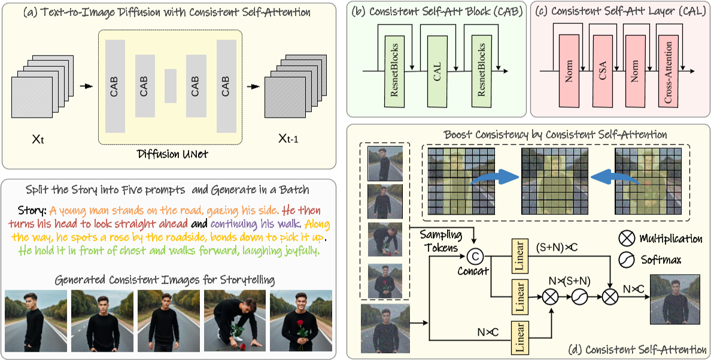
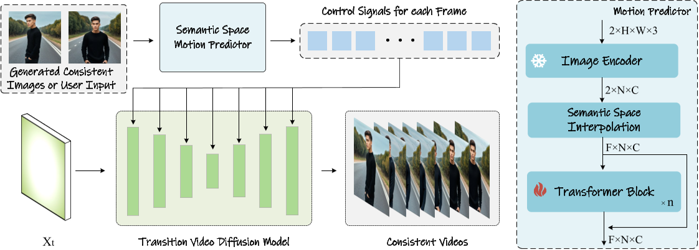

STORYDIFFUSION: CONSISTENT SELF-ATTENTION FOR LONG-RANGE IMAGE AND VIDEO GENERATION
这篇论文是由南开大学、字节跳动等机构提出的创新性研究，旨在解决生成连贯的多图像序列（如漫画）和长视频时的内容一致性问题。
核心问题是什么?
对于最近基于扩散的生成模型，在一系列生成的图像中保持一致的内容，特别是那些包含主题和复杂细节的图像，提出了重大挑战。
一、核心方法与技术贡献
1. 一致性自注意力（Consistent Self-Attention）
- 功能与原理：

将故事文本拆分为多个提示，并使用这些提示批量生成图像。一致的自注意力在批量的多个图像之间建立连接，以实现主题一致性。
[?] 这个图画得不对？代码上还有input_id_images作为输入
该方法通过修改扩散模型中的自注意力机制，在生成一批图像时建立跨图像的关联，确保角色、服饰等细节的一致性。具体而言，在自注意力计算中引入其他图像的Token特征，通过特征交互促进角色属性的收敛（如面部、服装）。
- 技术优势：
- 无需训练：直接插入现有模型（如Stable Diffusion的U-Net架构），复用原有自注意力权重，实现即插即用。
- 多角色支持：可同时保持多个角色的一致性，适用于复杂叙事场景。
2. 语义运动预测器（Semantic Motion Predictor）
任务描述：通过在每对相邻图像之间插入帧，可以将生成的字符一致图像的序列进一步细化为视频。这可以看作是一个以已知开始帧和结束帧为条件的视频生成任务。
主要挑战：当两幅图像之间的差异较大时，SparseCtrl (Guo et al., 2023) 和 SEINE (Chen et al., 2023) 等最新方法无法稳定地连接两个条件图像。
当前解决方法的问题：这种限制源于它们仅依赖时间模块来预测中间帧，这可能不足以处理图像对之间的大状态间隙。时间模块在每个空间位置上的像素内独立操作，因此，在推断中间帧时可能没有充分考虑空间信息。这使得对长距离且具有物理意义的运动进行建模变得困难。
本文解决方法：语义运动预测器它将图像编码到图像语义空间中以捕获空间信息，从给定的起始帧和结束帧实现更准确的运动预测。

- 功能与原理：
针对长视频生成，该模块将起始帧和结束帧编码到语义空间（使用CLIP编码器），预测中间帧的运动轨迹，再通过视频扩散模型生成过渡视频。相较于传统潜在空间预测，语义空间能更稳定地捕捉空间信息。 - 技术流程：
- 编码与插值：将首尾帧映射为语义向量，插值生成中间序列。
- Transformer预测：通过训练过的模型优化中间帧嵌入，生成平滑的物理合理运动。
预训练的运动模块：结合预训练的运动模块，Semantic Motion Predictor能够生成比现有条件视频生成方法（如SEINE和SparseCtrl）更平滑、更稳定的视频帧。
3. 两阶段生成框架
- 第一阶段：生成一致性图像序列。通过文本分割生成多个提示词，批量生成图像并应用一致性自注意力。
- 第二阶段：生成视频过渡。基于第一阶段图像，利用语义运动预测器生成连贯视频。
二、实验与效果验证
1. 图像生成一致性对比
- 对比方法：与IP-Adapter、PhotoMaker等ID保持方法相比，StoryDiffusion在角色相似性（如服饰、面部）和文本-图像对齐性上表现更优。
- 定量指标：在CLIPSIM和LPIPS等指标上显著领先，尤其在复杂提示下仍能保持高一致性。
2. 视频生成性能
- 对比方法：与SEINE、SparseCtrl相比，生成的过渡视频在平滑度（LPIPS-frames）和语义一致性（CLIPSIM-frames）上均占优。
- 长视频支持：通过滑动窗口拼接多段视频，可生成超过1分钟的长视频，但全局连贯性仍有改进空间。
滑动窗口技术：为了支持长故事的生成，StoryDiffusion实现了与滑动窗口相结合的一致性自注意力，这消除了峰值内存消耗对输入文本长度的依赖，使得长故事的生成成为可能。
3. 消融实验
- 采样率优化：确定一致性自注意力的最佳采样率为0.5，平衡了生成质量与计算效率。
- 扩展性：兼容PhotoMaker等工具，支持用户指定角色ID生成图像。
三、代码解读
pipeline
# 简化代码，保留关键过程，源码请查看github
class PhotoMakerStableDiffusionXLPipeline(StableDiffusionXLPipeline):
@torch.no_grad()
def __call__(...):
# 0. Default height and width to unet
...
# 1. Check inputs. Raise error if not correct
...
# 2. Define call parameters
...
# 3. Encode input prompt，同时将reference image注入到embedding中
for prompt in prompt_arr:
# 3.1 Encode input prompt with trigger world
...
# 3.2 Encode input prompt without the trigger word for delayed conditioning
# 分别生成带trigger world的embedding和不带trigger world的embedding是训练策略。先保证无trigger world的普通生成质量，再加入trigger world。
...
# 5. Prepare the input ID images
...
# 7. Prepare timesteps
...
# 8. Prepare latent variables，latents的状态会累积
latents = self.prepare_latents(
...
latents, # init latents可以为None
)
# 9. Prepare extra step kwargs. TODO: Logic should ideally just be moved out of the pipeline
...
# 10. Prepare added time ids & embeddings
...
# 11. Denoising loop
...
# 12. decoder and get image
...
return image
使用Textual Inversion把Reference Image注入到文本中
# 简化代码，保留关键过程，源码请查看github
# 3. Encode input prompt
for prompt in prompt_arr:
# 3.1 Encode input prompt with trigger world
(
prompt_embeds, # 记录所有prompt的embeds
pooled_prompt_embeds, # 记录当前prompt的embeds
class_tokens_mask,
) = self.encode_prompt_with_trigger_word(
prompt=prompt,
prompt_2=prompt_2,
nc_flag = nc_flag,
...
)
# 3.2 Encode input prompt without the trigger word for delayed conditioning
# 先生成不带trigger world的prompt
# encode, 此处的encode是prompt转为token的意思，与上下文中的Encode不同
tokens_text_only = self.tokenizer.encode(prompt, add_special_tokens=False)
# remove trigger word token
trigger_word_token = self.tokenizer.convert_tokens_to_ids(self.trigger_word)
if not nc_flag:
tokens_text_only.remove(trigger_word_token)
# then decode, token -> prompt
prompt_text_only = self.tokenizer.decode(tokens_text_only, add_special_tokens=False)
# 再Encode
...
# 5. Prepare the input ID images
...
if not nc_flag:
# 6. Get the update text embedding with the stacked ID embedding
prompt_embeds = self.id_encoder(id_pixel_values, prompt_embeds, class_tokens_mask)
bs_embed, seq_len, _ = prompt_embeds.shape
# [B, S, D] -> [B, S*N, D]
prompt_embeds = prompt_embeds.repeat(1, num_images_per_prompt, 1)
# [B, S*N, D] -> [B*N, S, D] --- 这个直接repeat(N,1,1)有什么区别？
prompt_embeds = prompt_embeds.view(bs_embed * num_images_per_prompt, seq_len, -1)
pooled_prompt_embeds = pooled_prompt_embeds.repeat(1, num_images_per_prompt).view(
bs_embed * num_images_per_prompt, -1
)
pooled_prompt_embeds_arr.append(pooled_prompt_embeds)
pooled_prompt_embeds = None
第一步：对input prompt进行Encode
对input prompt进行Encode。其中prompt中是否包含trigger world token没有本质区别，只是一种训练策略。Encode的过程包括tokenize和text encode。
prompt --(tokenize)--> token --(text encode)--> embedding。
其中tokenize的过程有一些特殊处理，过程如下：
| 输入 | 输出 | 操作 |
|---|---|---|
| world list | token list | tokenizer.encode |
| token list | class_token_index, clean_input_ids list | token list中与trigger world token不同的token被放入clean input ids中，与trigger world token相同的token则被丢弃。 作者认为trigger world代表reference image，是一个名词，那么它前面的词就是形容reference image的特征的关键词，代码里称其为class。这个关键词在clean input ids中的index被记录到class_token_index list中。 实际上，只允许trigger world token在prmopt token中出现一次，因此也只有关键词及其在clean input ids中的index。 |
| class_token_index, clean input ids = [token, token, class, token, ...], reference image的数量 | clean input ids = [token, token, class,class, class, token, ...] | 根据reference image的数量重复class token |
| clean input ids | clean input ids | 把clean input ids补充或截断到固定长度 |
| clean input ids | class_tokens_mask | 标记clean input ids中哪些是class |
| clean input ids | prompt_embeds | 对每一个token逐个进行embedding并concat |
具体代码如下：
def encode_prompt_with_trigger_word(
self,
prompt: str,
prompt_2: Optional[str] = None,
num_id_images: int = 1,
device: Optional[torch.device] = None,
prompt_embeds: Optional[torch.FloatTensor] = None,
pooled_prompt_embeds: Optional[torch.FloatTensor] = None,
class_tokens_mask: Optional[torch.LongTensor] = None,
nc_flag: bool = False,
):
...
# Find the token id of the trigger word
image_token_id = self.tokenizer_2.convert_tokens_to_ids(self.trigger_word)
# Define tokenizers and text encoders
...
if prompt_embeds is None:
...
for prompt, tokenizer, text_encoder in zip(prompts, tokenizers, text_encoders):
input_ids = tokenizer.encode(prompt)
# Find out the corresponding class word token based on the newly added trigger word token
for i, token_id in enumerate(input_ids):
if token_id == image_token_id:
class_token_index.append(clean_index - 1)
else:
clean_input_ids.append(token_id)
clean_index += 1
# 异常处理
...
class_token_index = class_token_index[0]
# Expand the class word token and corresponding mask
class_token = clean_input_ids[class_token_index]
clean_input_ids = clean_input_ids[:class_token_index] + [class_token] * num_id_images + \
clean_input_ids[class_token_index+1:]
# Truncation or padding
max_len = tokenizer.model_max_length
if len(clean_input_ids) > max_len:
clean_input_ids = clean_input_ids[:max_len]
else:
clean_input_ids = clean_input_ids + [tokenizer.pad_token_id] * (
max_len - len(clean_input_ids)
)
class_tokens_mask = [True if class_token_index <= i < class_token_index+num_id_images else False \
for i in range(len(clean_input_ids))]
# 维度统一
...
prompt_embeds = text_encoder(
clean_input_ids.to(device),
output_hidden_states=True,
)
# We are only ALWAYS interested in the pooled output of the final text encoder
pooled_prompt_embeds = prompt_embeds[0]
prompt_embeds = prompt_embeds.hidden_states[-2]
prompt_embeds_list.append(prompt_embeds)
prompt_embeds = torch.concat(prompt_embeds_list, dim=-1)
prompt_embeds = prompt_embeds.to(dtype=self.text_encoder_2.dtype, device=device)
class_tokens_mask = class_tokens_mask.to(device=device) # TODO: ignoring two-prompt case
return prompt_embeds, pooled_prompt_embeds, class_tokens_mask
第二步：把reference image与prompt融合
先对每个reference image依次编码，然后让reference image embedding与prompt embedding中标记为class的embedding做融合。融合过程为MLP。
具体代码如下：
class FuseModule(nn.Module):
def __init__(self, embed_dim):
...
def fuse_fn(self, prompt_embeds, id_embeds):
stacked_id_embeds = torch.cat([prompt_embeds, id_embeds], dim=-1)
stacked_id_embeds = self.mlp1(stacked_id_embeds) + prompt_embeds
stacked_id_embeds = self.mlp2(stacked_id_embeds)
stacked_id_embeds = self.layer_norm(stacked_id_embeds)
return stacked_id_embeds
def forward(self, prompt_embeds, id_embeds, class_tokens_mask, ) -> torch.Tensor:
# id_embeds shape: [b, max_num_inputs, 1, 2048]
id_embeds = id_embeds.to(prompt_embeds.dtype)
# 维度匹配
...
valid_id_embeds = ...
# slice out the image token embeddings
image_token_embeds = prompt_embeds[class_tokens_mask]
stacked_id_embeds = self.fuse_fn(image_token_embeds, valid_id_embeds)
...
return updated_prompt_embeds
denoise step
denoise step 使用 UNet-based diffusion network + CFG训练策略，输入由以下方式构成：
- latent_model_input
- latents
- latents
- current_prompt_embeds
- negative_prompt_embeds
- prompt_embeds(text only)
- id pixel values
- prompt embeddings
- class token mask
- added_cond_kwargs
- add text embeddings
- negative_pooled_prompt_embeds
- pooled_prompt_embeds(text_only)
- add time embeddings
- add text embeddings
# 11. Denoising loop
for i, t in enumerate(timesteps):
latent_model_input = (
torch.cat([latents] * 2) if do_classifier_free_guidance else latents
)
latent_model_input = self.scheduler.scale_model_input(latent_model_input, t)
if i <= start_merge_step or nc_flag:
current_prompt_embeds = torch.cat(
[negative_prompt_embeds, prompt_embeds_text_only], dim=0
)
add_text_embeds = torch.cat([negative_pooled_prompt_embeds, pooled_prompt_embeds_text_only], dim=0)
else:
current_prompt_embeds = torch.cat(
[negative_prompt_embeds, prompt_embeds], dim=0
)
add_text_embeds = torch.cat([negative_pooled_prompt_embeds, pooled_prompt_embeds], dim=0)
# predict the noise residual
added_cond_kwargs = {"text_embeds": add_text_embeds, "time_ids": add_time_ids}
noise_pred = self.unet(
latent_model_input,
t,
encoder_hidden_states=current_prompt_embeds,
cross_attention_kwargs=cross_attention_kwargs,
added_cond_kwargs=added_cond_kwargs,
return_dict=False,
)[0]
# perform guidance
if do_classifier_free_guidance:
noise_pred_uncond, noise_pred_text = noise_pred.chunk(2)
noise_pred = noise_pred_uncond + guidance_scale * (noise_pred_text - noise_pred_uncond)
if do_classifier_free_guidance and guidance_rescale > 0.0:
# Based on 3.4. in https://arxiv.org/pdf/2305.08891.pdf
noise_pred = rescale_noise_cfg(noise_pred, noise_pred_text, guidance_rescale=guidance_rescale)
# compute the previous noisy sample x_t -> x_t-1
latents = self.scheduler.step(noise_pred, t, latents, **extra_step_kwargs, return_dict=False)[0]
...
image = self.vae.decode(latents / self.vae.config.scaling_factor, return_dict=False)[0]
image = self.image_processor.postprocess(image, output_type=output_type)
return image
图像一致性问题
在生成过程中在batch内的图像之间建立连接。保持一批图像中角色的一致性。
方法：将一致性自注意力插入到图像生成模型现有 U-Net 架构中原始自注意力的位置，并重用原始自注意力权重以保持免训练和可插拔。
定义一批图像特征为： \(\mathcal{I} ∈ R^{B×N×C}\) ，其中 B、N 和 C 分别是batch size、每个图像中的token数量和channel数。
通常情况下，第i张图像的Attention函数的输入xQ、xK、xV由第i图像的特征（1×N×C）通过映射得到。
本文为了在batch中的图像之间建立交互以保持一致性，修改为从batch中的其他图像特征中采样一些token加入第i个图像的特征中，第i张图像的特征变为1×(W * N * sampling_rate + N)×C，其中第一部分为从其它图像采样来的token，第二部分为自己原有的token。
def ConsistentSelfAttention(images_features, sampling_rate, tile_size):
"""
images_tokens: [B, C, N] # 论文上是这么写的，但我认为是[B, N, C]
sampling_rate: Float (0-1)
tile_size: Int
"""
output = zeros(B, N, C), count = zeros(B, N, C), W = tile_size
for t in range(0, N - tile_size + 1):
# Use tile to override out of GPU memory
tile_features = images_tokens[t:t + W, :, :]
reshape_featrue = tile_feature.reshape(1, W*N, C).repeat(W, 1, 1)
sampled_tokens = RandSample(reshape_featrue, rate=sampling_rate, dim=1)
# Concat the tokens from other images with the original tokens
token_KV = concat([sampled_tokens, tile_features], dim=1)
token_Q = tile_features
# perform attention calculation:
X_q, X_k, X_v = Linear_q(token_Q), Linear_k(token_KV), Linear_v(token_KV)
output[t:t+w, :, :] += Attention(X_q, X_k, X_v)
count[t:t+w, :, :] += 1
output = output/count
return output
参考材料
- 项目主页：https://StoryDiffusion.github.io